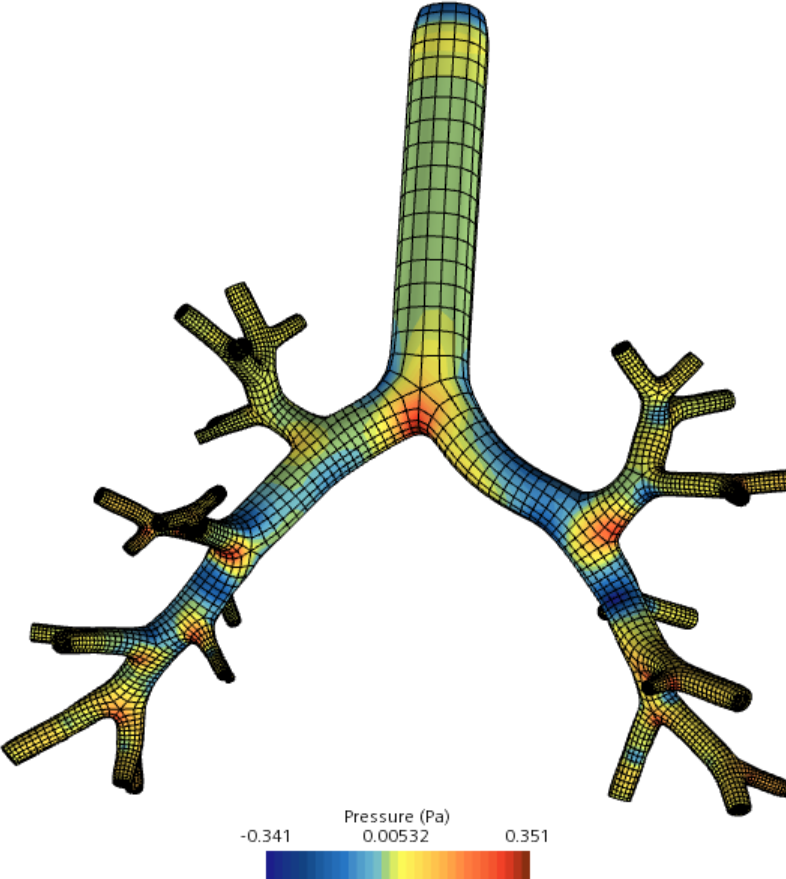

Contexte
<hr style="width: 70%; display:flex; justify-content:space-evenly;">

<div class="r-hstack">
	<div>
		
		<p style="font-size:18px; margin-top: -25px;">&#xC9;coulement de fluides dans des bronches</p>
	</div>

	<div style="text-align: left; padding-left: 2%;">
		<p style="font-size: 25px;"><b>Simulation numérique</b></p>
		<ul style="font-size: 22px; margin-top: -10px;">
			<li style="padding-top: 0px;">Omniprésente dans l'industrie et la recherche</li>
			<li style="padding-top: 10px;">Modélise des phénomènes physiques</li>
			<li style="padding-top: 10px;">Appliquée à un domaine géométrique</li>
		</ul>

		<p style="font-size: 25px;"><b>Méthode par éléments finis</b></p>
		<ul style="font-size: 22px; margin-top: -10px;">
			<li>Résolution d'équations simples</li>
			<li style="padding-top: 10px;">Décomposition du domaine : <b>maillage volumique</b></li>
			<li style="padding-top: 10px;">Corrélation entre :</li>
				<ul style="font-size: 20px;">
					<li><b>Qualité</b> du maillage</li>
					<li><b>Précision</b> de la simulation</li>
				</ul>
		</ul>
	</div>
</div>

<aside class="notes">

</aside>